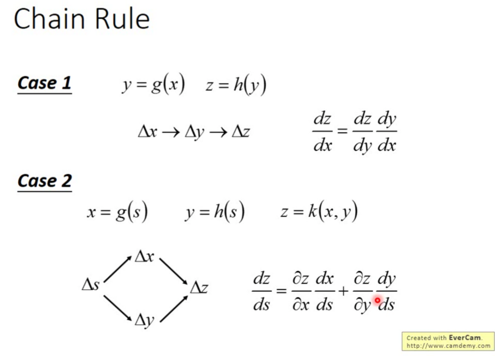
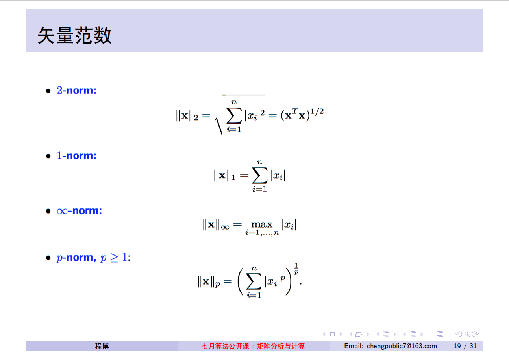
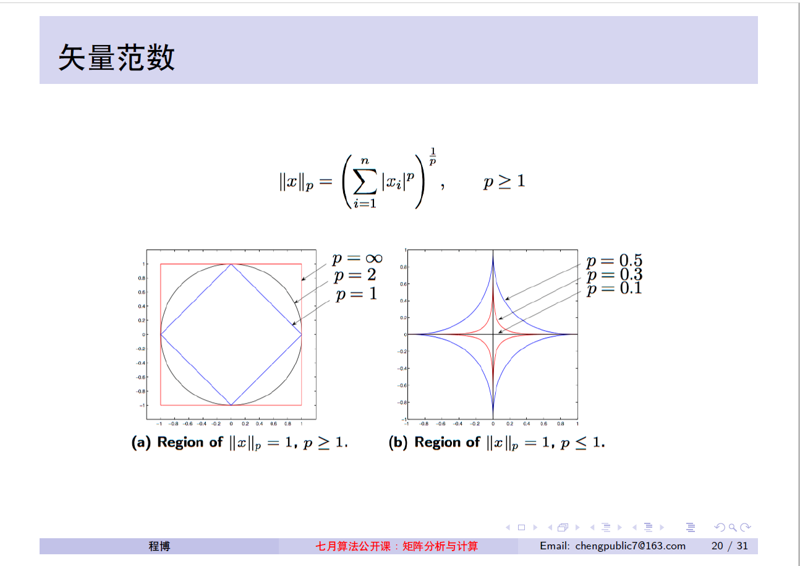

Basic Mathematics for Machine Learning
本科学习的所有数学知识都还给数学老师了，所以在此对用到的数学基础知识进行复习和总结。
1. 导数(Derivative)
- 一个函数不一定在所有的点上都有导数
- 可导的函数一定连续；不连续的函数一定不可导
- 原函数与反函数导数关系：
y=f(x)的反函数是x=g(y)，则有y’=1/x’ - 复合函数的导数：
复合函数对自变量的导数，等于已知函数对中间变量的导数，乘以中间变量对自变量的导数(称为链式法则) 链式法则:
1
2
3u=g(y)
y=f(x)
du/dx = (du/dy) * (dy/dx)这个结论可推广到任意有限个函数复合的情形，于是复合函数的导数将是构成复合这有限个函数在相应点的导数的乘积，就像锁链一样一环套一环，故称链式法则。
- 导数与函数的性质
单调性
⑴ 若导数大于零，则单调递增；若导数小于零，则单调递减；导数等于零为函数驻点，不一定为极值点。需代入驻点左右两边的数值求导数正负判断单调性。
⑵ 若已知函数为递增函数，则导数大于等于零；若已知函数为递减函数，则导数小于等于零。
根据微积分基本定理，对于可导的函数，有：
如果函数的导函数在某一区间内恒大于零（或恒小于零），那么函数在这一区间内单调递增（或单调递减），这种区间也称为函数的单调区间。导函数等于零的点称为函数的驻点，在这类点上函数可能会取得极大值或极小值（即极值可疑点）。进一步判断则需要知道导函数在附近的符号。对于满足的一点，如果存在使得在之前区间上都大于等于零，而在之后区间上都小于等于零，那么是一个极大值点，反之则为极小值点。
凹凸性
可导函数的凹凸性与其导数的单调性有关。如果函数的导函数在某个区间上单调递增，那么这个区间上函数是向下凹的，反之则是向上凸的。如果二阶导函数存在，也可以用它的正负性判断，如果在某个区间上恒大于零，则这个区间上函数是向下凹的，反之这个区间上函数是向上凸的。曲线的凹凸分界点称为曲线的拐点。(可以用Sigmoid函数曲线和其导数的曲线理解) - 导数为零的点不一定是极值点。当函数为常值函数，没有增减性，即没有极值点。但导数为零。（导数为零的点称之为驻点，如果驻点两侧的导数的符号相反，则该点为极值点，否则为一般的驻点，如y=x^3中f’(0)=0，x=0的左右导数符号为正，该点为一般驻点。）
References:
2. 偏导数(Partial Derivative)
x方向的偏导
设有二元函数 z=f(x,y) ，点(x0, y0)是其定义域 D 内一点。把 y 固定在 y0 而让 x 在 x0 有增量 △x，相应地函数 z=f(x, y) 有增量(称为对 x 的偏增量）△z=f(x0+△x,y0)-f(x0,y0)。
如果 △z 与 △x 之比当 △x→0 时的极限存在，那么此极限值称为函数 z=f(x, y) 在 (x0, y0)处对 x 的偏导数，记作 f’x(x0, y0)。函数 z=f(x, y) 在(x0, y0)处对 x 的偏导数，实际上就是把 y 固定在 y0 看成常数后，一元函数z=f(x, y0)在 x0 处的导数。
y方向的偏导
同样，把 x 固定在 x0，让 y 有增量 △y ，如果极限存在那么此极限称为函数 z=(x, y) 在 (x0, y0)处对 y 的偏导数, 记作f’y(x0,y0)。
References:
3. 数学期望
离散型随机变量:
离散型随机变量的一切可能的取值与对应的概率乘积之和称为该离散型随机变量的数学期望，记为E(x)。它是简单算术平均的一种推广，类似加权平均。
$ E(X) = \sum{k=1}^{\infty}x_kp_k $
*连续型随机变量:
若随机变量X的分布函数F(x)可表示成一个非负可积函数f(x)的积分，则称X为连续型随机变量，f(x)称为X的概率密度函数(分布密度函数)。数学期望E(X)完全由随机变量X的概率分布所确定, 若X服从某一分布, 也称E(X)是这一分布的数学期望。
$ E(X) = \int{-\infty}^{\infty}x*f(x) {\rm d}x $
数学期望的性质:
- E(C) = C
- E(CX) = C * E(X)
- E(X+Y) = E(X) + E(Y)
- 当X和Y相互独立时，E(XY) = E(X)E(Y)
性质3和性质4可以推广到任意有限个相互独立的随机变量之和或之积的情况。
References:
4. 先验概率、后验概率
“概率论只不过是把常识用数学公式表达了出来” —- 拉普拉斯
- 先验概率 是指根据以往经验和分析得到的概率
比如骰子, 我们都知道掷到任一面的概率是1/6, 而且无数次重复实验也表明是这个数, 这是一种常识, 也是在我们不知道任何情况下必然会说出的一个值. 所谓的先验概率是我们在未知条件下对事件发生可能性猜测的数学表示 - 后验概率 事情已经发生，求这件事情发生的原因是由某个因素引起的可能性的大小
后验概率的这个说法和李航的《统计学习方法》中的说法不一致，李航的说法是后验概率就是P(Y=ck|X=x),Y是要预测的类，数学含义是给定样本x，其被分类到ck类的概率。 P52
References:
5. 极大似然估计
极大似然估计是参数估计的方法之一，求极大似然函数估计值的一般步骤为:
- 写出似然函数
- 对似然函数取对数，并整理
- 求导数
- 解似然方程
6. 矩阵的秩
在线性代数中，一个矩阵A的列秩是A的线性无关的纵列的极大数目。类似地，行秩是A的线性无关的横行的极大数目。通俗一点说，如果把矩阵看成一个个行向量或者列向量，秩就是这些行向量或者列向量的秩，也就是极大无关组中所含向量的个数。
- 方阵(行数、列数相等的矩阵)的列秩和行秩总是相等的，因此它们可以简单地称作矩阵A的秩。通常表示为r(A)，rk(A)或 rank(A)
- m × n矩阵的秩最大为m和n中的较小者，表示为 min(m,n)。有尽可能大的秩的矩阵被称为有满秩；类似的，否则矩阵是秩不足(或称为“欠秩”)的
满秩 Rank(A) = min{m, n}; 不满秩 Rank(A) < min{m, n} - 设A是一组向量，定义A的极大无关组中向量的个数为A的秩
秩的性质:
A: m*n, B: n*s
(1)转置后秩不变
(2)r(A)<=min(m,n), A是m*n型矩阵
(3)r(kA)=r(A), k不等于0
(4)r(A)=0 <=> A=0
(5)r(A+B)<=r(A)+r(B)
(6)r(AB)<=min(r(A),r(B))
(7)r(A)+r(B)-n<=r(AB)
(8)P,Q为可逆矩阵, 则 r(PA)=r(A)=r(AQ)=r(PAQ)
References:
7. 范数


8. Taylor公式
泰勒公式是将一个在 $x=x_0$ 处具有n阶导数的函数 $f(x)$ 利用关于 $(x-x_0)$ 的n次多项式来逼近函数的方法。
若函数 $f(x)$ 在包含 $x_0$ 的某个闭区间[a, b]上具有n阶导数，且在开区间(a, b)上具有(n+1)阶导数，则对闭区间[a,b]上任意一点x，下式成立
:
其中，$f^{(n)}(x)$ 表示 $f(x)$ 的n阶导数，等号后的多项式称为函数f(x)在 $x_0$ 处的泰勒展开式，剩余的 $R_n(x)$是泰勒公式的余项，是 $(x-x_0)^n$ 的高阶无穷小。
$R_n(x)$余项有多种表示形式，例如拉格朗日(Lagrange)余项:
其中$\theta\in(0, 1)$。
References:
9. 高阶无穷小
对于两个无穷小量 $\alpha$ 和 $\beta$ ，如果 $\lim\frac{\alpha}{\beta}=0$ ，就把 $\alpha$ 叫做比 $\beta$ 高阶的无穷小量，并把 $\beta$ 叫做比 $\alpha$ 低阶的无穷小量；简称 $\alpha$ 是 $\beta$ 的高阶无穷小，$\beta$ 是 $\alpha$ 的低阶无穷小，记成 $\alpha = o(\beta)$ 。
如果 $\lim\frac{\alpha}{\beta^k}=C$ ，其中 $C$ 为异于零的常数，这时把 $\alpha$ 叫做 $\beta$ 的 $k$ 阶无穷小。
例如，因为 $\displaystyle \lim{x \to 0}\frac{3x^2}{x} = \lim{x \to 0}3x = 3\lim_{x \to 0}x = 3*0 = 0$ ，所以 $x \to 0$ 时 $3x^2$ 是比 $x$ 较高阶的无穷小，意思是说在 $x \to 0$ 的过程中 $3x^2$ 比 $x$ 趋向0的速度快。
10. 取模和取余
对于整型数a，b来说，取模运算或者取余运算的方法都是:
- 求整数商:
c = a / b - 计算模或者余数:
r = a - c * b
取模运算和取余运算在第一步不同: 取余运算在取c的值时，向 0 方向舍入；而取模运算在计算c的值时，向负无穷方向舍入。
例如计算 -7 mod 4
那么a = -7, b = 4
第一步: 求整数商c，如进行取模运算c = -2(向负无穷方向舍入)，求余c = -1(向0方向舍入)
第二步: 计算模和余数的公式相同，但因为c的值不同，取模时r = 1，取余时r = -3
归纳:
- 当a和b符号一致时，取模运算和取余运算所得的c的值一致，因此结果一致
- 当符号不一致时，结果不一样。取模运算结果的符号和b一致，取余运算结果的符号和a一致
另外各个环境下%运算符的含义不同，比如C/C++，Java 为取余，而Python则为取模
References:
两个整数 a和b，若它们除以正整数 m 所得的余数相等，则称 a，b对于模m同余，记作 ${a \equiv b {\pmod {m}}}$, 读作a同余于b模m，或读作a与b关于模m同余。
比如 $26 \equiv 14{\pmod {12}}$。
性质:
- 整除性 https://blog.csdn.net/northeastsqure/article/details/50163031
$ a\equiv b{\pmod {m}} \Rightarrow c \cdot m=a-b, c \in \mathbb {Z}$ 即是说 a 和 b 之差是 m 的倍数 - 传递性
$ {\left.{\begin{matrix}a\equiv b{\pmod {m}}\b\equiv c{\pmod {m}}\end{matrix}}\right}\Rightarrow a\equiv c{\pmod {m}}}$ 保持基本运算
1
{\left.{\begin{matrix}a\equiv b{\pmod {m}}\\c\equiv d{\pmod {m}}\end{matrix}}\right\} \Rightarrow \left\{{\begin{matrix}a\pm c\equiv b\pm d{\pmod {m}}\\ac\equiv bd{\pmod {m}}\end{matrix}}\right.}
(Not working for mathjax, so I have to place it in a code block, 可以参见参考链接同余).
这性质更可进一步引申成为这样:
${a\equiv b{\pmod {m}}\Rightarrow {\begin{cases}an\equiv bn{\pmod {m}},\forall n\in \mathbb {Z} \a^{n}\equiv b^{n}{\pmod {m}},\forall n\in \mathbb {N} ^{0}\end{cases}}}$- 放大缩小底数
k为整数，n为正整数 ${(km\pm a)^{n}\equiv (\pm a)^{n}{\pmod {m}}}$ - 放大缩小模数
k为正整数，${a\equiv b{\pmod {m}}}$，当且仅当 ${ka\equiv kb{\pmod {km}}}$
References:
11. 卡方分布(chi-square distribution)
若n个相互独立的随机变量ξ₁、ξ₂、……、ξn ，均服从标准正态分布(也称独立同分布于标准正态分布)，则这n个服从标准正态分布的随机变量的平方和${\displaystyle Q=\sum_{i=1}^{n}\xi_i^2}$ 构成一新的随机变量，其分布规律称为$\chi^2$分布(chi-square distribution)，其中参数v称为自由度，正如正态分布中均数或方差不同就是另一个正态分布一样，自由度不同就是另一个$\chi^2$分布。记为$Q\sim\chi^2(v)$或者$Q\sim\chi_v^2$ (其中$v=n-k$，k为限制条件数)。
卡方分布是由正态分布构造而成的一个新的分布，当自由度v很大时，$\chi^2$分布近似为正态分布。
对于任意正整数x，自由度为v的卡方分布是一个随机变量X的机率分布。
卡方分布性质:
- $\chi^2$分布在第一象限内，卡方值都是正值，呈正偏态(右偏态)，随着参数v的增大，$\chi^2$分布趋近于正态分布. 卡方分布密度曲线下的面积都是1
- $\chi^2$分布的均值与方差可以看出，随着自由度v的增大，$\chi^2$分布向正无穷方向延伸(因为均值v越来越大)，分布曲线也越来越低阔(因为方差2v越来越大)
- 不同的自由度决定不同的卡方分布，自由度越小，分布越偏斜
- 若$\chi{(v_1)}^2$, $\chi{(v2)}^2$互相独立，则$\chi{(v1)}^2 + \chi{(v_2)}^2$服从$\chi^2$分布，自由度为$v_1 + v_2$
- $\chi^2$分布的均数为自由度v，记为 $E(\chi^2) = v$
- $\chi^2$分布的方差为2倍的自由度2v，记为 $D(\chi^2) = 2v$
References:
12. 协方差(Covariance)
协方差表示的是两个变量的总体的误差，这与只表示一个变量误差的方差不同。 如果两个变量的变化趋势一致，也就是说如果其中一个大于自身的期望值，另外一个也大于自身的期望值，那么两个变量之间的协方差就是正值。 如果两个变量的变化趋势相反，即其中一个大于自身的期望值，另外一个却小于自身的期望值，那么两个变量之间的协方差就是负值。
期望值分别为E[X]与E[Y]的两个实随机变量X与Y之间的协方差Cov(X,Y)定义为：
如果X与Y是统计独立的，那么二者之间的协方差就是0，因为两个独立的随机变量满足$E[XY]=E[X]E[Y]$。
但是，反过来并不成立，即如果X与Y的协方差为0，二者并不一定是统计独立的(可能是非线性相关，如 x 和 x^2)。
若两个随机变量X和Y相互独立，则Cov(X, Y)=0，因而若Cov(X, Y)不为零，则X和Y必不是相互独立的。
协方差与方差之间有如下关系:
协方差用于度量各个维度(如下式中的X和Y两个维度)偏离其均值的程度:
协方差的性质:
- $Cov(X，Y)=Cov(Y，X)$
- $Cov(aX，bY)=abCov(X，Y)$ a，b是常数
- $Cov(X1+X2，Y)=Cov(X1，Y)+Cov(X2，Y)$
由协方差定义，可以看出$Cov(X，X)=D(X)$，$Cov(Y，Y)=D(Y)$。
称为随机变量X和Y的(Pearson)相关系数
若$\rho{XY}=0$，则称X与Y**不线性_相关**
协方差有时也称为是两个随机变量之间”线性独立性”的度量
协方差矩阵:
分别为m与n个标量元素的列向量随机变量X与Y，这两个变量之间的协方差定义为m×n矩阵.其中X包含变量X1,X2,…,Xm，Y包含变量Y1,Y2,…,Yn，假设X1的期望值为μ1，Y2的期望值为v2，那么在协方差矩阵中(1,2)的元素就是X1和Y2的协方差。
两个向量变量的协方差Cov(X,Y)与Cov(Y,X)互为转置矩阵。
协方差矩阵的定义如下:
举一个简单的三维的例子，假设数据集有{x,y,z}三个维度，则协方差矩阵为
可见，协方差矩阵是一个对称的矩阵，而且对角线是各个维度上的方差。
必须要明确一点，协方差矩阵计算的是不同维度之间的协方差，而不是不同样本之间的。
- 当 cov(X, Y)>0时，表明 X与Y 正相关
- 当 cov(X, Y)<0时，表明 X与Y 负相关
- 当 cov(X, Y)=0时，表明 X与Y 不是线性相关
如果X与Y的协方差为0，二者并不一定是统计独立的, 只能说明X与Y不是线性相关，但有可能是非线性相关，如x和x^2
References:
13. 中心极限定理
正态分布有一个很重要的性质: 在特定条件下，大量 统计独立 的随机变量的和的分布趋于正态分布，这就是中心极限定理。中心极限定理的重要意义在于，依据这一定理的结论，其它概率分布能够用正态分布作为近似。
14. 两个重要极限公式
- $\displaystyle \lim_{x \to 0} \frac{sin x}{x} = 1$
- $\displaystyle \lim{x \to 0} (1+x)^{\frac{1}{x}} = e$ 或 $\displaystyle \lim{x \to \infty} (1+\frac{1}{x})^{x} = e$
References: